literally in seconds it may not seem important to understand the nature of functions at any deeper level. After all, if you have a formula you know everything there is to know about a function, right?
Well, yes . . . and no.
In a sense, obtaining a formula that describes whatever real-world phenomena you might be investigating is the Holy Grail 2
https://en.wikipedia.org/wiki/Holy_Grail
, of science. And for exactly the reason you would expect. Formulas can tell us a great deal about the phenomenon. But they don’t tell us everything.
For example, suppose equation (10.1)) describes some real world phenomenon. Does reading the formula give you any sense of the essential qualities of \(y(x)\text{?}\) No, of course not. Because pictures are easier to understand than formulas we usually look at the graph of a function to get a sense of it. We used one of the many graphing systems available to generate the graph of \(y(x)\) seen in Figure 10.1 below. Impressive, isn’t it?
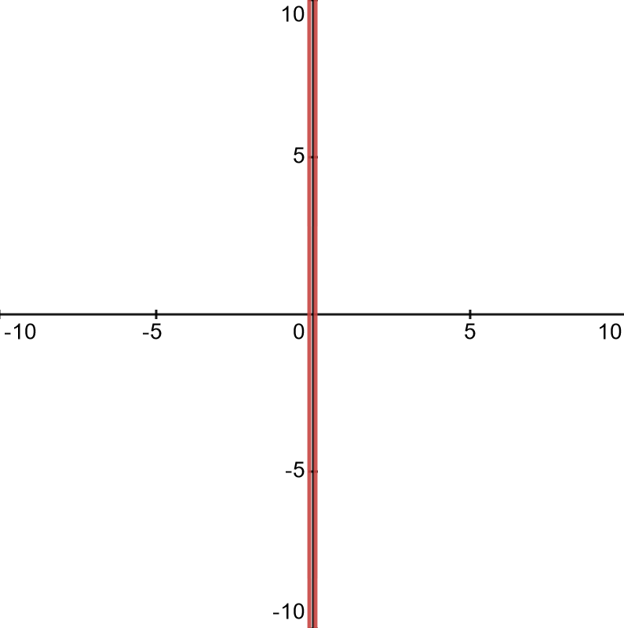
Figure10.1.A useless graph of \(y(x) =x^4 - 400.5 x^3 + 40099.49 x^2 + 4.005 x - 400.995\)
Because we simply used the default settings of our graphing tool this picture doesn’t really help much either. We’ll have to modify the viewing window to see anything useful. Take out your favorite graphing utility and adjust the settings until you find settings that give you a more useful display like the one in Figure 10.2 below.
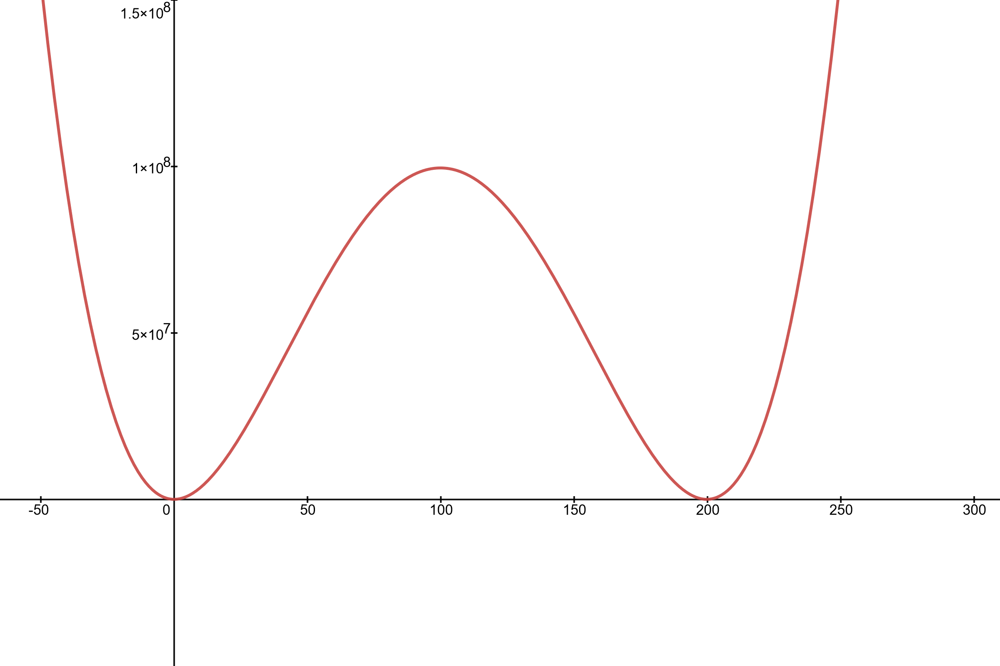
Figure10.2.A more usefull graph of \(y(x) =x^4 - 400.5 x^3 + 40099.49 x^2 + 4.005 x - 400.995\)
To be sure, this graph does tell us great deal about the qualitative behavior of \(y(x)\text{.}\) Visualizing the graph in this way is a good thing. But getting more detailed information can be tricky. For example, what are the exact values of the \(x\) coordinates of the two places where the graph appears to graze the \(x\) axis? One appears to be \(x=0\) and the other appears to be \(x=200\text{,}\) but is that right? Notice the horizontal and vertical scales. Can we be sure that at these scales all of the important bumps an wiggles on the graph are visible? When the top of the graph is at \(y=\) ten million can we tell, just by looking, if \(y(0)=y(200)=0\text{?}\)
You might well ask, “Obviously when \(x=0\) and \(x=200\)\(y\) is near zero. Is it really important to know whether or not it is exactly zero?”
Problem10.3.
Compute \(y(0)\) and \(y(200)\) to see if they are really near zero.
Hint.
Use a calculator for \(y(200)\text{,}\) not for \(y(0)\text{.}\)
The fact is that it is hard to get good quantitative information from anything but very simple graphs. But does that matter? From the graph above we can see very plainly what is happening over a very large interval. Isn’t that enough?
Well, that depends.
Suppose you are a nuclear engineer and you’ve invented a simple process that requires an external source of energy. Suppose further that the graph above shows the rate of energy consumption, \(y\text{,}\) of your process as a function of the ambient temperature, \(x\text{.}\) Then any temperature at which \(y\lt 0\) is a temperature where the process is producing energy, not consuming it. Depending on rate of production and how simple the process is, being able to identify the temperature range where \(y(x)\lt 0\) could be the difference between winning the Nobel Prize 3
https://www.nobelprize.org/
, and becoming a laughing stock.
You would want to know.
In this chapter we will explore some techniques that will help you win your Nobel Prize.
In Chapter 9 we saw that the First and Second Derivative Tests are exactly the tools necessary to answer each of the following questions:
On what intervals is the function increasing and on what intervals is it decreasing?
Where are the local extrema located?
What are the values of the local extrema?
Where does the inflection of the graph transition between concave up and concave down?
Example10.4.
For example consider the following function. \(y=\frac{x}{1+x^2}\text{.}\) Differentiating \(y\) we see that
and conclude that the graph is decreasing on the interval \(\left(-\infty,-1\right)\text{,}\) increasing on the interval \((-1,1)\text{,}\) and decreasing again on \(\left(-2,-\infty\right)\text{.}\) Computing the second derivative gives:
This tells us that \(y(x)\) will have PITPs at \(x=-\sqrt{3}\text{,}\)\(x=0\text{,}\) and \(x= \sqrt{3}\text{.}\) Testing a single point in each of these intervals between PITPs we see that
and conclude that the graph is concave downward on the interval \(\left(-\infty,-\sqrt{3}\right)\text{,}\) concave upward on the interval \((-\sqrt{3},0)\text{,}\) concave downward on the interval \(\left(0,-\sqrt{3}\right)\text{,}\) and concave downward on the interval \(\left(\sqrt{3}, \infty\right)\text{.}\)
Problem10.5.
Use your favorite graphing tool to graph \(y=\frac{x}{1+x^2}\) and confirm our conclusions.
Example10.6..
The previous example was fairly simple so it was easy to keep all of the important information in mind at the same time. This will not always be the case so we will need ways to organize the data we collect. This will ensure that it is not overwhelming. Below we demonstrate one way to do this. It is not the only way. Let’s sketch the graph of
using Calculus. To use the First Derivative Test we’ll need the derivative \(\dfdx{y}{x} =y^\prime(x)= \frac{4x(1-x^4)}{(1+x^4)^2}
\text{.}\)
Setting the first derivative equal to zero and solving we see that we have a POTP at \(x=-1\text{,}\)\(x=0\text{,}\) and at \(x=1\text{.}\) To make all of this easier to see we arrange this data in the following table. Notice that we have organized our POTPs (and hence the intervals that we are testing) from left to right, just as they would appear on a number line.
Table10.7.The First Derivative Test Analysis
Interval
\((-\infty, -1)\)
\((-1,0)\)
\((0, 1)\)
\((1,\infty) \)
\(y^\prime(x) \)
\(\gt 0\)
\(\lt 0\)
\(\gt 0\)
\(\lt 0 \)
\(y(x) \)
\(\nearrow\)
\(\searrow\)
\(\nearrow\)
\(\searrow\)
From the table above we see that we have a local maximum at \(x=-1\) and \(x=1\) and a local minimum at \(x=0\text{.}\) Based on this information we could reasonably infer that the graph might might have the shape shown below.
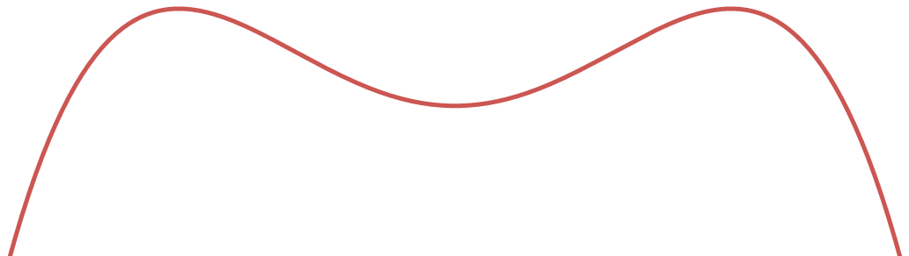
The next step is to locate this graph on the \(x\)-\(y\) plane. From our table above we see that the local minimum is at \(y(0)=2\text{,}\) and the two local maxima are at \(y(-1)=y(1)=3\text{.}\) Thus we can, again reasonably, infer that the graph of \(y(x)\) is located on the plane as shown below.
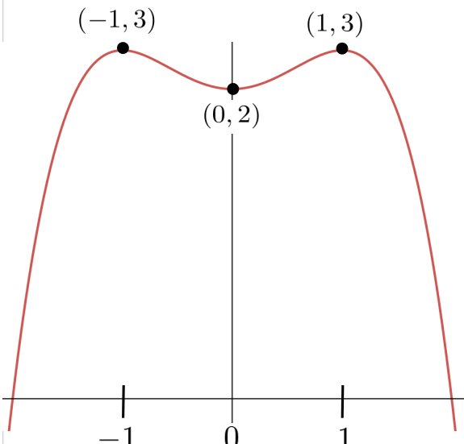
Unfortunately, we don’t know that our graph is correct (in fact, it is not) because we’ve made assumptions regarding its concavity that we haven’t justified. This is the same error we made in the discussion following Example 2.8, back in Chapter 2 when we drew a right triangle because it “seemed to be” correct. It is very easy to make this sort of mistake. Be careful. We can analyze the concavity of the graph using the second derivative in a manner very similar to what we did earlier with first derivative.
Problem10.8.
Confirm that the derivative of the function in Example 10.6 is
Use an appropriate computational tool, or Newton’s Method, to show that the PITPs of \(y(x)\) are: \(x\approx -1.41\text{,}\)\(x\approx -0.54\text{,}\)\(x\approx 0.54 \text{,}\) and \(x\approx 1.41 \text{.}\)
The PITPs in part (c) can actually be computed exactly. Find the exact solutions and confirm the approximations.
Next we set up a table to analyze the concavity of \(y=\frac{2+2x^2+2x^4}{1+x^4}\text{.}\)
Table10.9.The Second Derivative Test Analysis
Interval
\((-\infty,-1.41)\)
\((-1.41, -0.54)\)
\(( -0.54, 0.54)\)
\(( 0.54, 1.41)\)
\(( 1.41, \infty)\)
\(y^{\prime\prime}(x)\)
\(\gt 0\)
\(\lt 0\)
\(\gt 0\)
\(\lt 0\)
\(\gt 0\)
\(y(x)\)
\(\bigcup\)
\(\bigcap\)
\(\bigcup\)
\(\bigcap\)
\(\bigcup\)
From Table 10.9 we see that \(y(x)\) has inflection points at \(x=-1.41\text{,}\)\(x=-0.54\text{,}\)\(0.54\text{,}\) and \(x=1.41\text{.}\)
Combining the data in this table with the data in our previous table it would seem reasonable to infer that the graph of our function looks like the one below.
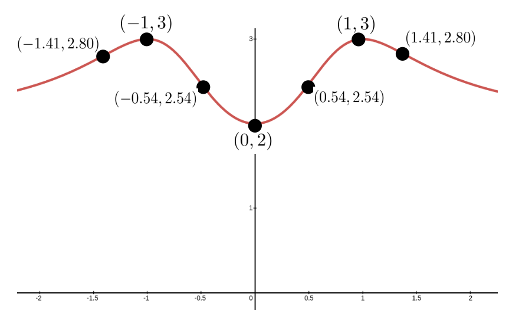
Does this graph above seem complete to you now? Obviously it is not, or we would not have asked, but do you see what is missing? What happens to \(y(x)\) as \(x\) is very far from zero either the positive or the negative direction? Does \(y(x)\) continue to drop? Or does it eventually level off? We’re not quite ready to talk about this yet, so give it some thought and take you best guess. We’ll come back and finish this example in Section 12.1 after we’ve developed some essential notation and definitions.
Problem10.10.
Use the first and second derivatives to sketch the graph of each of the following functions, then sketch it again using graphing software. Resolve any discrepancies between the two graphs.
\(\displaystyle y=e^x \)
\(\displaystyle y=\ln(x) \)
\(\displaystyle y=\sin(x) \)
\(\displaystyle y=\cos(x) \)
\(\displaystyle y=\sin(x)\cos(x) \)
\(\displaystyle y=xe^x\)
\(\displaystyle y=\frac{e^x-e^{-x}}{2} \)
\(\displaystyle y=\frac{e^x+e^{-x}}{2} \)
\(\displaystyle y=x(x-1)\)
\(\displaystyle y=x^2(x-1) \)
\(\displaystyle y=x^2(x^2-1) \)
\(\displaystyle y=x(x-1)(x-2) \)
\(\displaystyle y=x\sqrt[3]{x-8} \)
\(\displaystyle y=\sqrt[3]{x}{(x-8)} \)
Section10.2Graphing Without Formulas
At it’s most fundamental a function is just a rule for associating a given input with its unique output. For example, we could specify a particular function by writing “take two copies of the input, multiply them together and return the result as output.” This is a complete and valid description but it is cumbersome to use. This is why we’ve invented notation that allows us to write the description succinctly as the formula \(f(x)=x^2\text{.}\) It is easy to sketch an accurate graph of a function that is given as a formula, especially using modern technology, because the formula tells you the steps for finding the output for any given input.
As mentioned earlier, formulas are the Holy Grail of modern science and business. But, despite what you have seen in your mathematics education so far, very often we don’t have such a formula. This is the usual situation. If you own a trout fishery business for example, you would love to have a formula that tells you how many trout your fishery will have on any given day of the year. With such a formula you could make plans for your business well into the future. We will talk about this in more detail in the next section.
Example10.11.
For example, suppose we have the following information about a certain function. Can we sketch a reasonable graph of the function?
\(\displaystyle y(1)=2 \)
\(\displaystyle \dfdxat{y}{x}{1}=0\)
\(\displaystyle \dfdxat{y}{x}{5}=0\)
\(\displaystyle \eval{\dfdxn{y}{x}{2}}{x=3}{}=0\)
\(\displaystyle \eval{\dfdxn{y}{x}{2}}{x=5}{}=0\)
\(\dfdx{y}{x}\gt0\)
for all \(x\lt1\)
\(\dfdx{y}{x}\lt0\)
for \(1\lt x\lt 5\)
and \(x\gt5\)
\(\dfdxn{y}{x}{2}\gt0\)
for \(3\lt x\lt5\)
\(\dfdxn{y}{x}{2}\lt0\)
for \(x\lt3\)
and \(x\gt5\)
In a sense this is easier than the previous problems, since intervals of increase, decrease, concave up, and concave down have already been determined for us. For example, here are the tables for each.
Table10.12.POTPs
Interval
\((-\infty, 1)\)
\((1,5)\)
\((5,\infty )\)
\(\dfdx{y}{x} \)
\(\dfdx{y}{x}\gt0\)
\(\dfdx{y}{x}\lt0\)
\(\dfdx{y}{x}\lt0\)
\(y\)
\(\nearrow\)
\(\searrow\)
\(\searrow\)
Table10.13.PITPs
Interval
\((-\infty, 3)\)
\((3,5)\)
\((5,\infty )\)
\(\dfdxn{y}{x}{2} \)
\(\dfdxn{y}{x}{2}\lt0\)
\(\dfdxn{y}{x}{2}\gt0\)
\(\dfdxn{y}{x}{2}\lt0\)
\(y\)
\(\bigcap\)
\(\bigcup\)
\(\bigcap\)
Drill10.14.
In Example 10.11 we have \(\dfdxat{y}{x}{5}=0\) and \(\dfdx{y}{x}\lt 0\) on the intervals \((1,5)\) and \((5,\infty)\text{.}\) Given that \(\dfdxat{y}{x}{5}=0\) and \(\dfdxn{y}{x}{2}\lt 0\) when \(x\gt 5\text{,}\) did we really need to specify that \(\dfdx{y}{x}\lt0\) on the interval \((5,\infty)\text{?}\)
Based on the information given, the function \(y=y(x)\) has a local maximum at \(x=1\) and inflection points at \(x=3\) and \(x=5.\) A sketch of the graph might look something like this:
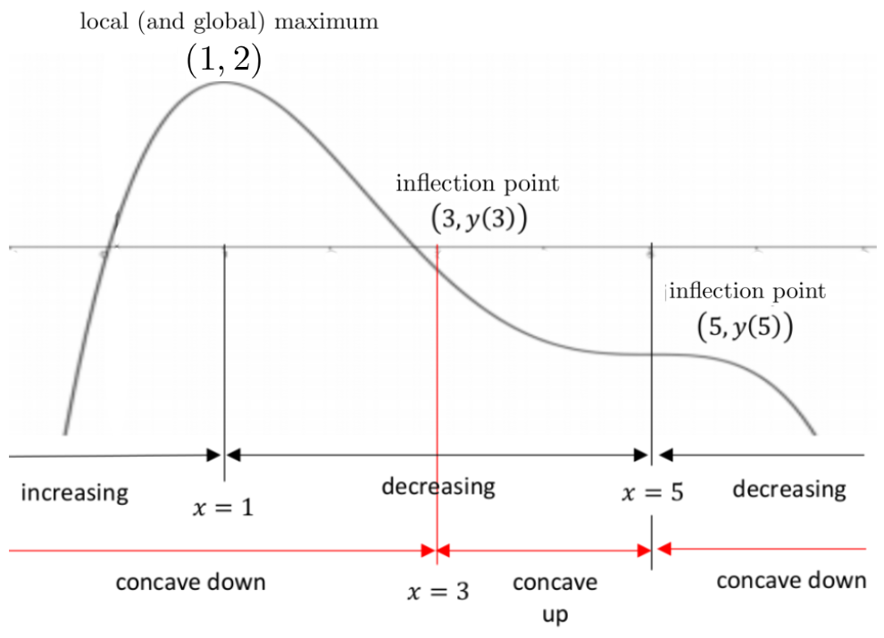
Drill10.15.
Sketch the graph of \(y=y(x)\) which satisfies the given requirements.
(a)
\(y(-8)=10\text{,}\)
\(\dfdx{y}{x}\lt0\) for all \(x\)
\(\displaystyle \dfdxn{y}{x}{2}\gt0\)
(b)
\(y(0)=0\text{,}\)
\(\eval{\dfdx{y}{x}}{x}{0}=0\text{,}\)
\(\geneval{\dfdx{y}{x}}{x}{\neq0}\gt0\text{,}\)
\(\dfdxn{y}{x}{2}\lt0\) for \(x\lt0\text{,}\)
\(\dfdxn{y}{x}{2}\gt0\) for \(x\gt0\text{,}\)
(c)
\(-\frac{\pi}{2}\lt y\lt\frac{\pi}{2}\) for all \(x\text{,}\)
\(y(0)=0\text{,}\)
\(\dfdxat{y}{x}{0}=1\text{,}\)
\(\dfdx{y}{x}\gt0\) for all \(x\text{,}\)
\(\dfdxn{y}{x}{2}\gt0\text{,}\) for \(x\lt0\text{,}\)
\(\dfdxn{y}{x}{2}\lt0\text{,}\) for \(x\gt0\text{,}\)
(d)
\(y(0)=0\text{,}\)
\(\dfdxat{y}{x}{0}\) does not exist,
\(\geneval{\dfdx{y}{x}}{x}{\neq0}\gt0\text{,}\)
\(\dfdxn{y}{x}{2}\gt0\text{,}\) for \(x\lt0\)
\(\dfdxn{y}{x}{2}\lt0\text{,}\) for \(x\gt0\)
(e)
\(y\gt0\) for all \(x\text{,}\)
\(y(0)=1\text{,}\)
\(\dfdx{y}{x}\gt0\) for all \(x\text{,}\)
\(\dfdxn{y}{x}{2}\gt0\) for all \(x\text{.}\)
(f)
\(y(0)=0\text{,}\)
\(\dfdxat{y}{x}{0}=0\text{,}\)
\(\displaystyle \dfdxat{y}{x}{2}=0,\)
\(\dfdx{y}{x}\gt0\) for \(x\) in \((-\infty,0)\text{,}\)
\(\dfdx{y}{x}\gt0\) for \(x\) in \((0,2)\text{,}\)
\(\dfdx{y}{x}\lt0\) for \(x\gt2\text{,}\)
\(\eval{\dfdxn{y}{x}{2}}{x=0}{}=0\text{,}\)
\(\eval{\dfdxn{y}{x}{2}}{x=1}{}=0\text{,}\)
\(\dfdxn{y}{x}{2}\gt0\) for \(x\) in \((0,1)\text{,}\)
\(\dfdxn{y}{x}{2}\lt0\) for \(x\) in \((-\infty,0)\text{,}\)
\(\dfdxn{y}{x}{2}\lt0\) for \(x\) in \((1,\infty)\text{,}\)
\(\dfdxn{y}{x}{2}\gt0\) for \(0\lt x \lt\frac{\pi}{2}\text{,}\)
\(\dfdxn{y}{x}{2}\gt0\) for \(\frac{3\pi}{2} \lt x\lt2\pi\text{,}\)
\(\dfdxn{y}{x}{2}\lt0\) for \(\frac{\pi}{2}\lt x \lt \frac{3\pi}{2}\)
Graphing \(y(x)\) from the Graph of \(\dfdx{y}{x} \).
In Section 6.5 we found tphe graph of \(\inverse\tan(x)\) by examining the graph of its derivative, the Witch of Agnesi, The procedure we used in Section 6.5 is quite general. For example, suppose the graph of \(\dfdx{y}{x}\) is given below.
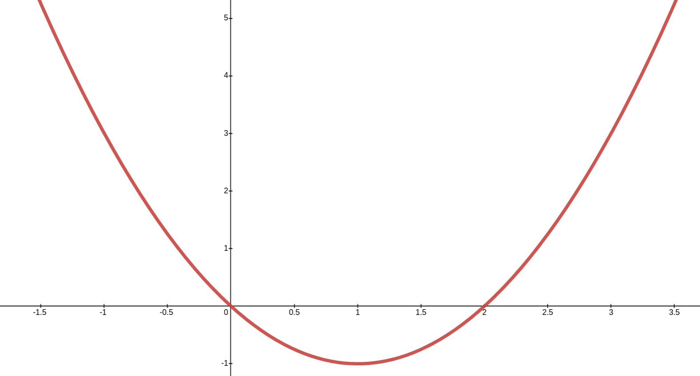
Recall that with a graph for \(\dfdx{y}{x}\text{,}\) finding where \(y\) is increasing or \(y\) is decreasing is just a matter of determining where the derivative is positive (above the \(x\) axis) or negative (below the \(x\) axis). Similarly the concavity of the graph of \(y(x)\) can be determined by finding where \(\dfdx{y}{x} = y^\prime(x)\) is increasing (concave upward) and decreasing (concave downward). Given the graph of \(\dfdx{y}{x}\) at the right, we can produce the following tables.
Table10.16.POTPs
Interval
\((-\infty, 0)\)
\((0,2)\)
\((2,\infty) \)
\(\dfdx{y}{x} \)
\(\dfdx{y}{x} \gt 0\)
\(\dfdx{y}{x} \lt 0\)
\(\dfdx{y}{x} \gt 0\)
\(y\)
\(\nearrow \)
\(\searrow \)
\(\nearrow \)
Table10.17.PITPs
Interval
\((-\infty, 1)\)
\((1,\infty)\)
\(\dfdxn{y}{x}{2} \)
\(\dfdxn{y}{x}{2}\lt0 \)
\(\dfdxn{y}{x}{2}\gt0 \)
\(y \)
\(\bigcap \)
\(\bigcup \)
From the data in our tables we see that the graph of \(y\) looks something like this.
Drill10.18.
Each of the following graphs is the derivative of some function. Find the shape of the graph of the function.
(a)
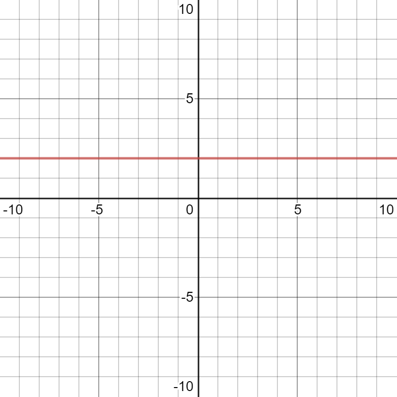
(b)
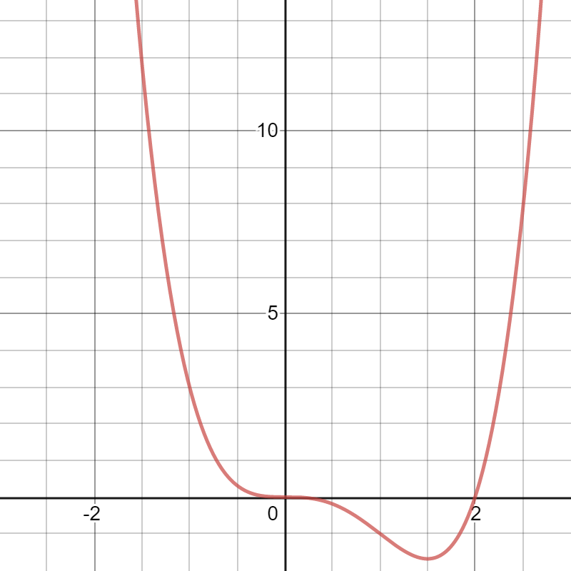
(c)
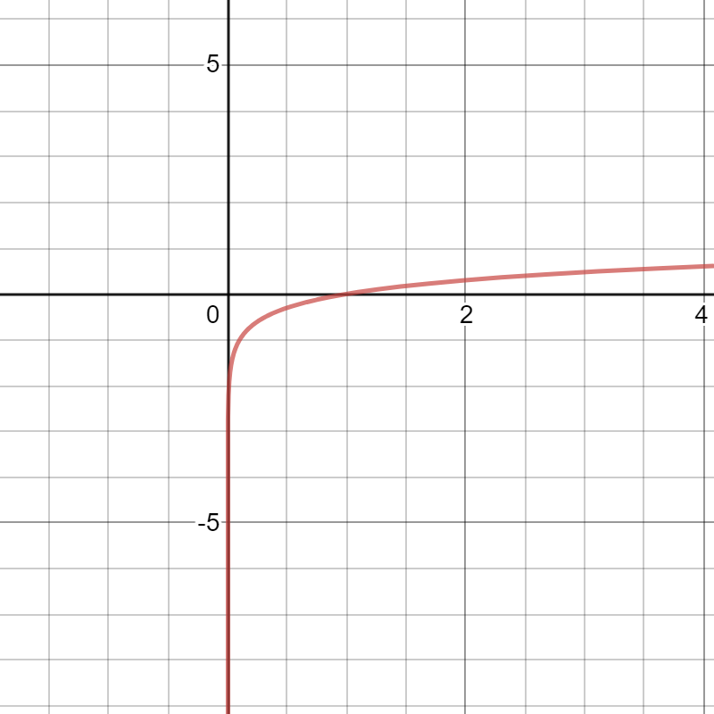
(d)
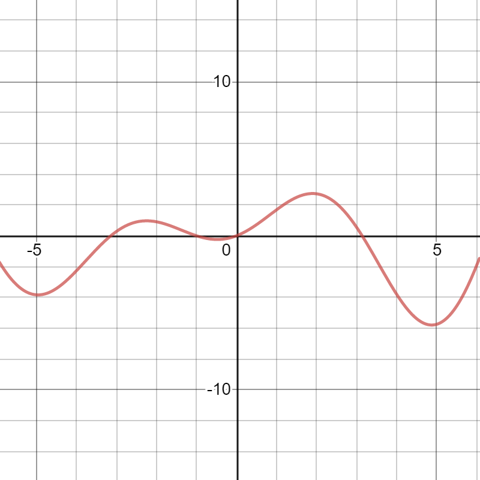
(e)
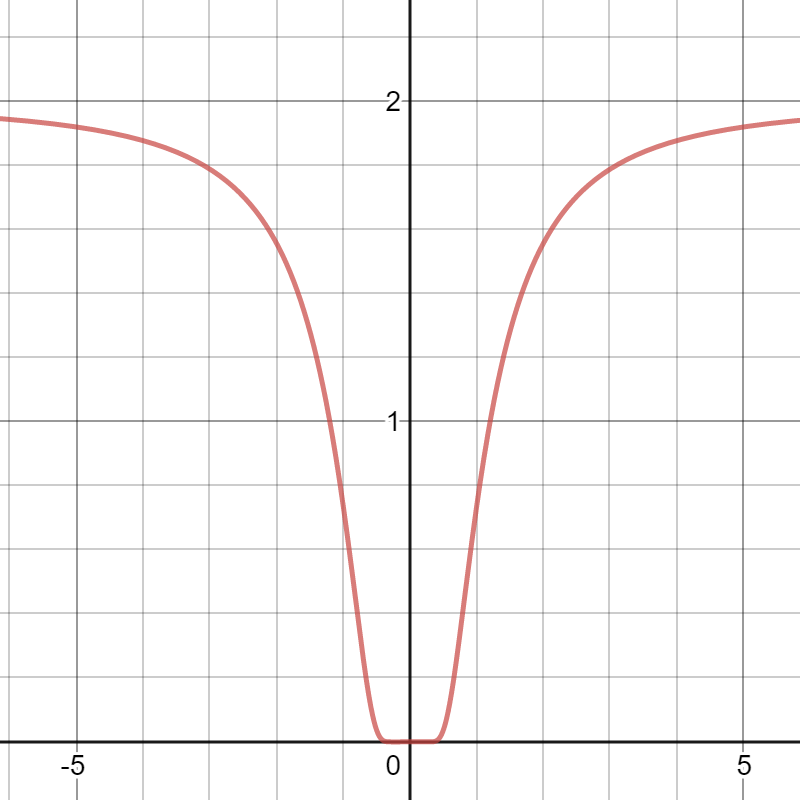
(f)
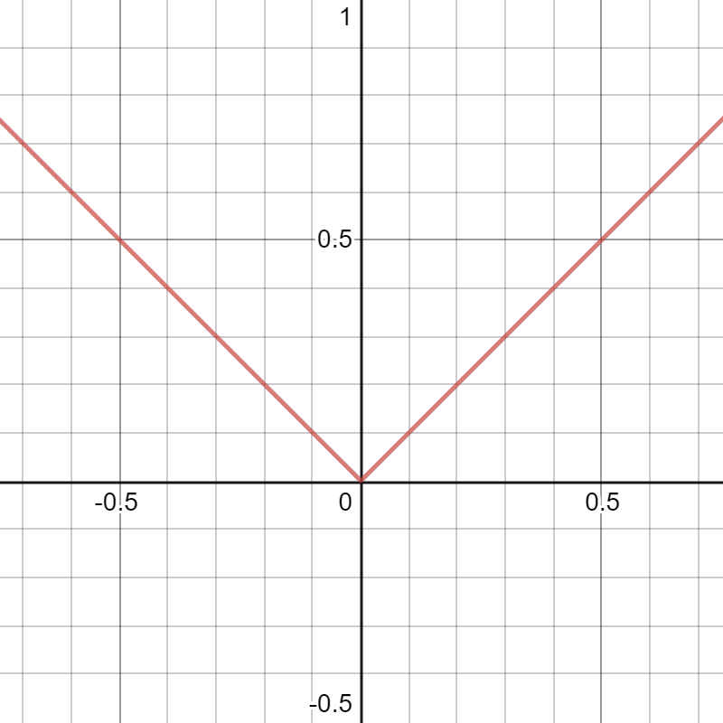
(g)
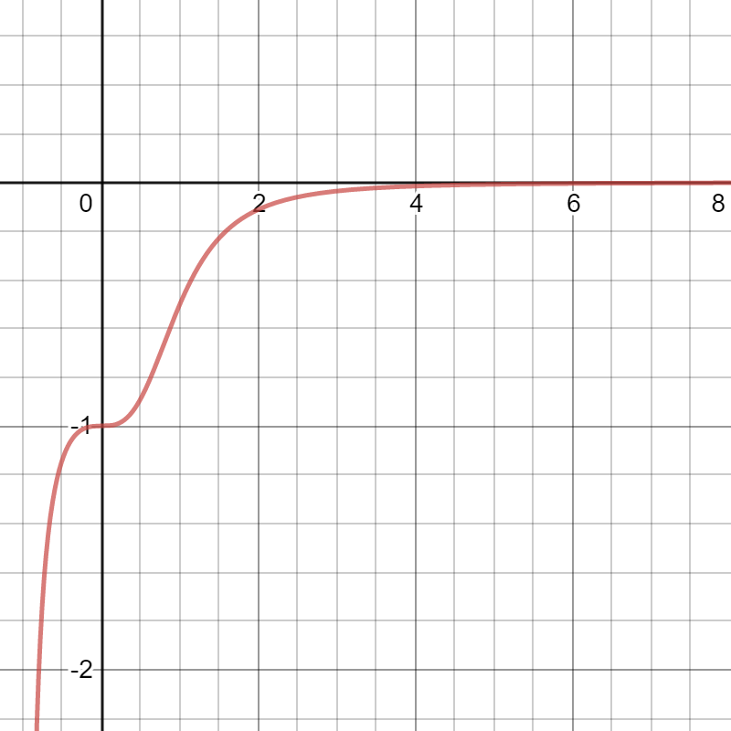
(h)
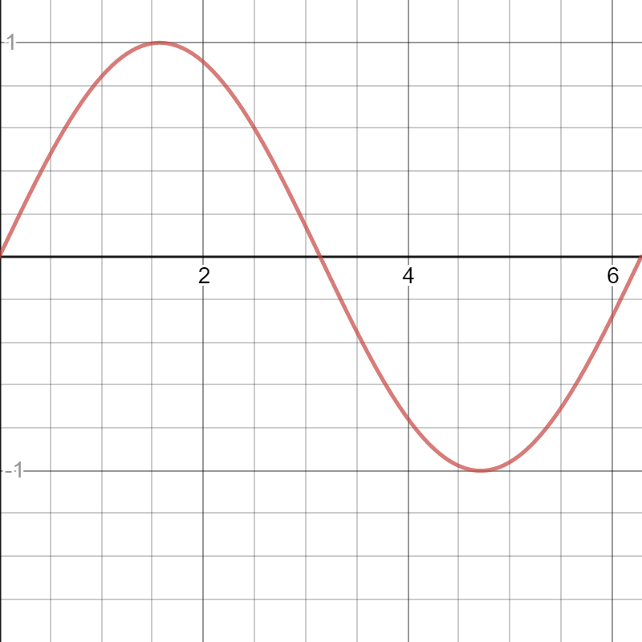
(i)
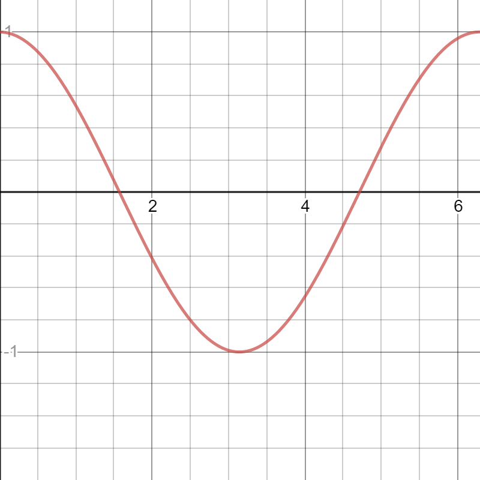
(j)
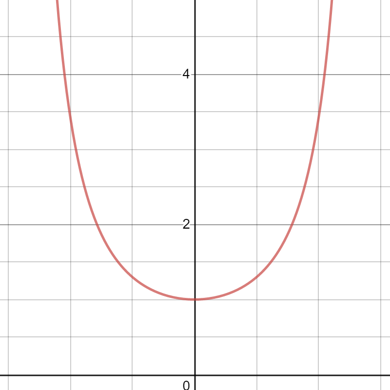
(k)
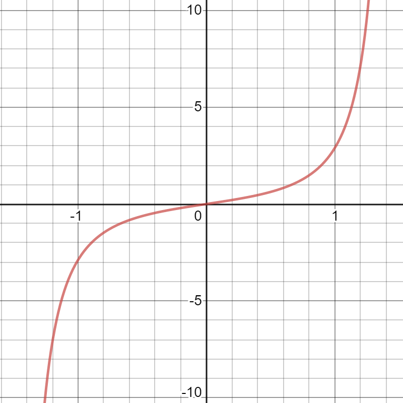
(l)
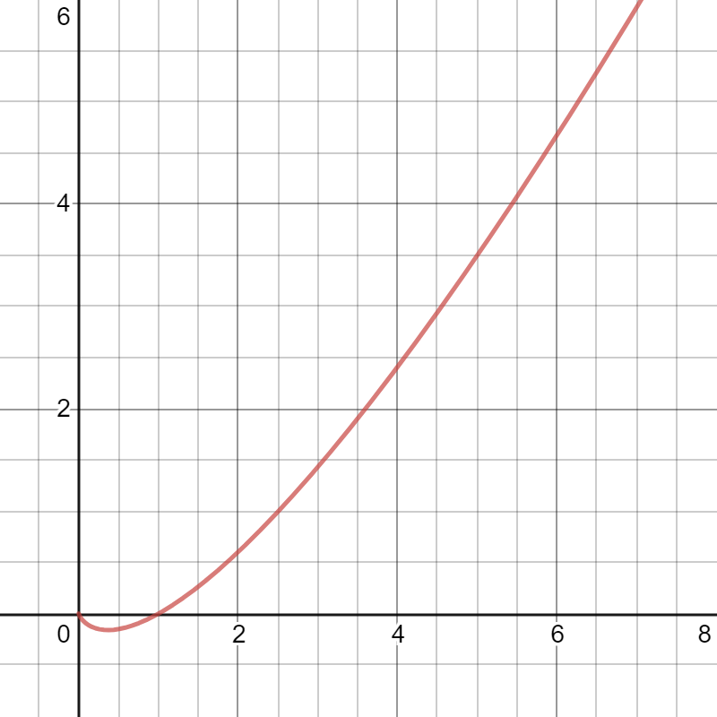
Section10.3Graphing with a Formula for \(\dfdx{y}{t}\)
In Integral Calculus (probably your next math course) you will learn how to find \(y(t)\) explicitly. For now we will be satisfied with sketching an approximate graph of \(y(t)\text{.}\) Setting \(\dfdx{y}{t}=0\) and solving we see that \(t=0\) and \(t=4\) are the POTPs for \(y(t)\text{.}\) Thus on each of the intervals \((-\infty,0)\text{,}\)\((0,4)\text{,}\) and \((4,\infty)\) the graph of \(y(t)\) is either always increasing or always decreasing. We tabulate this information as follows:
Table10.20.POTPs
Interval
\((-\infty, 0)\)
\((0,4)\)
\((4,\infty)\)
\(y^\prime (t)\)
\(y^\prime (t)\lt0\)
\(y^\prime (t)\gt0\)
\(y^\prime (t)\lt0\)
\(y (t)\)
\(\searrow\)
\(\nearrow\)
\(\searrow\)
Based on this table, we can see that \(y(0)=0\) is a local minimum and \(y(4)\) is a local maximum. Observe that we do not know the value of \(y(4)\text{,}\) only that it must be a local maximum. Nor do we have any way to determine the value of \(y(4)\) in this problem.
We proceed in a similar fashion to determine concavity. The second derivative is
Setting \(\dfdxn{y}{t}{2}=0\) and solving, we see that \(t=2\) is a PITP for \(y(t)\text{.}\) Making a table as before we have
Table10.21.PITPs
Interval
\((-\infty, 2)\)
\((2,\infty)\)
\(y^\prime(t) \)
\(y^\prime(t)\gt 0\)
\(y^\prime(t)\lt 0\)
\(y(t)\)
\(\bigcup\)
\(\bigcap\)
Based on the table we see that the point \((2,y(2))\) is an inflection point. We want to make a reasonable sketch of the graph of \(y=y(t)\) based on this information. But there is a lot of information in Table 10.20 and Table 10.21 and our graph needs to be consistent with all of it. So we first organize all of our conclusions by plotting the transition points (both optimal and inflective) on the \(t\) axis and identifying the intervals where \(y\) is increasing, decreasing, concave up, or concave down.
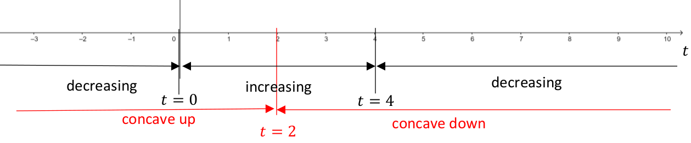
This information, along with the initial value, \(y(0)=0\) allows us to provide a reasonable graph of \(y(t)\text{.}\)
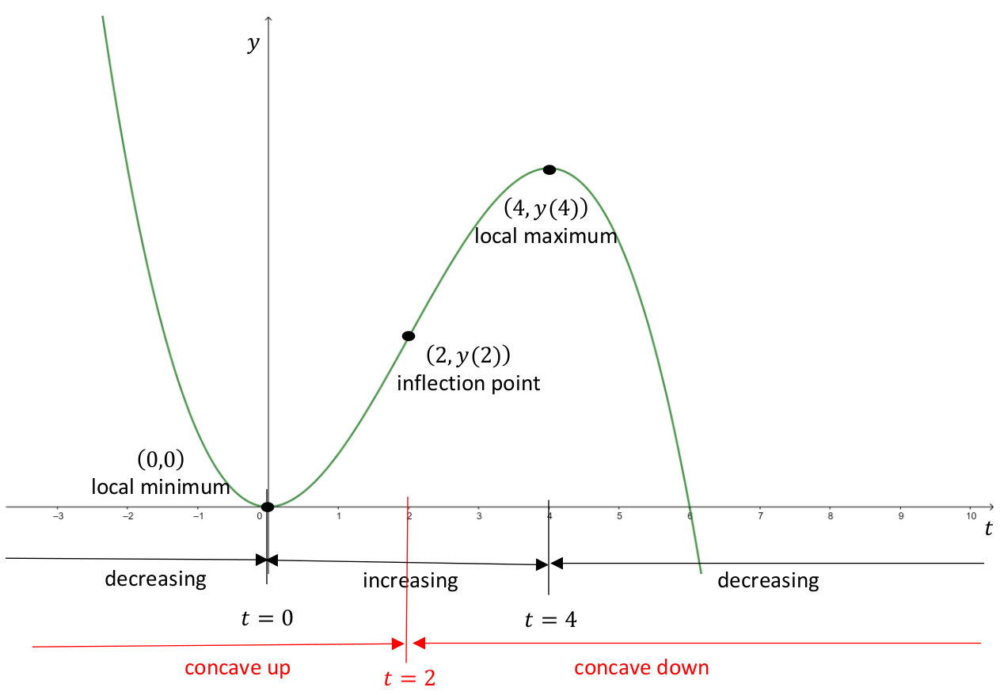
From the initial condition in the IVP we know that \(y(0)=0\) but we have no information about the vertical coordinate of any other point on the graph. Thus, from the information given the scale of this graph is unknowable. But we know that the graph above is reasonable because it is consistent with the data given in the IVP. This sort of graphical, qualitative analysis is the best we can do with the information we have but, as you see, we can glean a great deal of information about the “shape” of the graph of a function from its derivative alone.
Drill10.22.
For each of the following IVPs:
(a)
Find the intervals on which the graph of the solution is increasing and decreasing. Identify the location all local extrema.
(b)
Find the intervals on which the graph of the solution is concave upward and concave downward. Identify the location of all inflection points.
(c)
Plot a reasonable sketch of the graph for \(y=y(t).\) Approximate transition points using the appropriate technology or Newton’s Method as necessary.
When \(\dfdx{y}{t}\) depends on \(y\) alone.
To see a World in a Grain of Sand And a Heaven in a Wild Flower Hold Infinity in the palm of your hand And Eternity in an hour
This is the same IVP we approximated in Section 7.3. The analysis we will do here is related so you may find it useful to review that section before proceeding.
As we’ve seen every IVP has two parts: a differential equation (in this case, \(\dfdx{y}{t}=y\text{,}\) and an initial value (in this case, \(y(0)=1\) or equivalently, \((0,1)\)).
We will focus on the differential equation first. The differential equation \(\dfdx{y}{t}=y\) says that at each point on the graph of \(y(t)\) the slope of the graph is equal to the vertical coordinate at that point. For example if \((0,1)\) is a point on the graph of \(y(t)\text{,}\) then nearby the graph of \(y(t)\) will look like the orange part of the sketch below. On the other hand, if \((1,1)\) is a point on the graph of \(y(t)\) then near the point \((1,1)\text{,}\) graph of \(y(t)\) will look like the red graph in the sketch below.
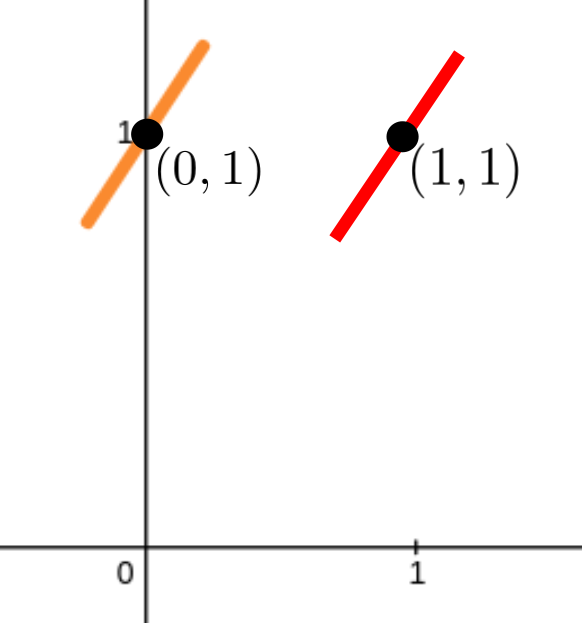
In fact, for any value of \(t\text{,}\) we know that if \((t,1)\) is a point on the graph of \(y(t)\) then the slope of the graph which passes through that point will be parallel to the orange and red lines above (that is, if a solution of the differential equation passes through a point \((t,1)\) then its slope will be equal to \(1\) at \((t,1)\)).
This is seen in the figure below where each black dot represents a point with vertical coordinate equal to \(1\) and each orange segment represents the graph of the curve that both satisfies the differential equation from IVP (10.2), and passes through that point.
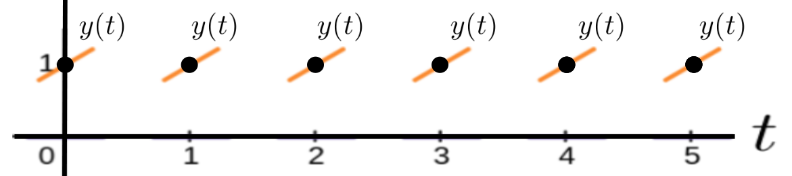
Similarly, if we know that \((t,2)\) is a point on the graph of \(y(t)\text{,}\) where \(y(t)\) both solves the differential equation from IVP (10.2) and passes through that point, then the slope at \((t,2)\) will be \(2\text{,}\) as seen in the following sketch.
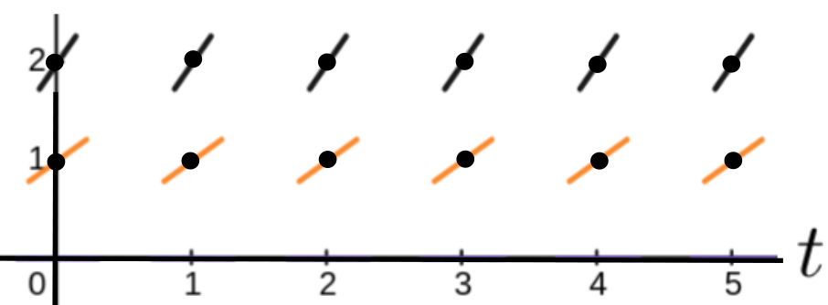
By tagging more points in the plane in the same way we get the image below.
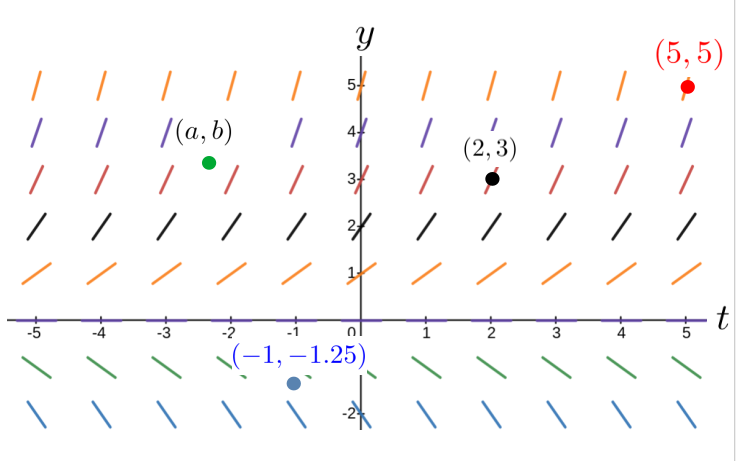
A sketch like this is called a slope field. The short line segment at each point, \((a,b)\text{,}\) is a short section of the graph of the function which satisfies the differential equation \(\dfdx{y}{t}=y\text{.}\)
If we know where to start (i.e., if we have an initial condition) the slope field allows us to determine the shape of the entire graph.
For example to sketch the graph of \(y(t)\) if it passes through the point \((2,3)\text{,}\) we simply follow the line segments in our slope field starting at that point. This is the black graph in the sketch below. The graph of the \(y(t)\) that passes through the point \((5,5)\) is shown in red below, and the graph that passes through the point \((-1,-1.25)\) is shown in blue.
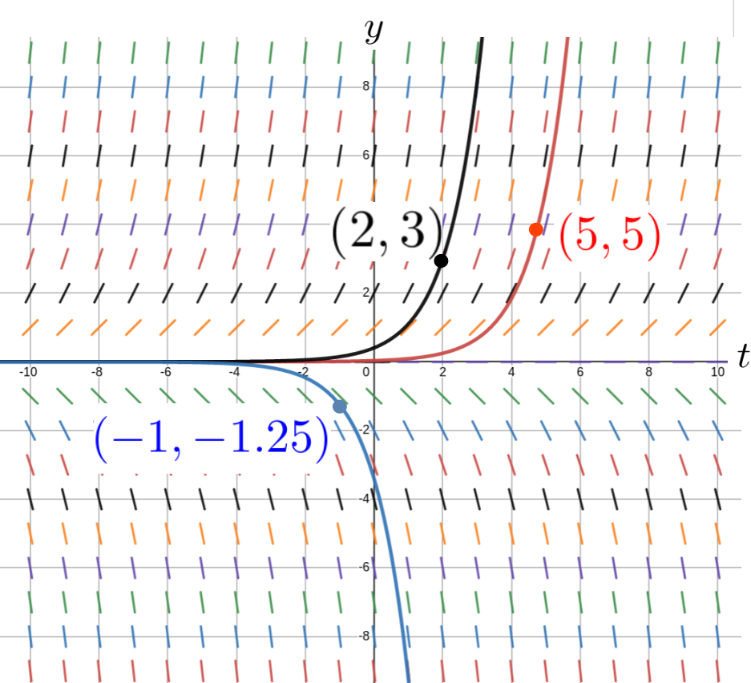
Problem10.23.
IVP (10.2) has the initial condition, \(y(0)=1.\) Plot the point \((0,1)\) and use this slope field to sketch the solution of IVP (10.2). Compare your solution with the approximation we obtained in Section 7.3. Do they look like the same solution?
Drill10.24.
(a)
Confirm that \(y(t)=3e^{t-2}\) is the solution of the IVP \(\dfdx{y}{t}=y\text{,}\)\(y(2)=3\text{.}\) (This is the black graph above.)
(b)
Confirm that \(y(t)=5e^{t-5}\) is the solution of the IVP \(\dfdx{y}{t}=y\text{,}\)\(y(5)=5\text{.}\) (This is the red graph above.)
(c)
Based on parts (a) and (b) guess what the solution of the IVP \(\dfdx{y}{t}=y\text{,}\)\(y(-1)=-2\) will be. Confirm that your guess is correct. {If you guess wrong, guess again.}
(d)
Based on parts (a) and (b), and (c) make a conjecture what the solution of the IVP \(\dfdx{y}{t}=y\text{,}\)\(y(a)=b\) will be. Confirm that your guess is correct.
To sketch the graph of the solution of a given IVP begin by drawing the slope field for the differential equation. Then plot the value and follow the slope field to sketch the graph.
Drill10.25.
For each of the following IVPs sketch the slope field in the ranges given and use your slope field to sketch the solution of the IVP.
Analytically, this is a more complex situation. However it is possible, and quite useful, to get a qualitative sketch of the solution of an IVP from the slope field.
Drill10.26.
For each of the following IVPs draw The slope field in the ranges given and use your slope field to sketch the solution of the IVP.